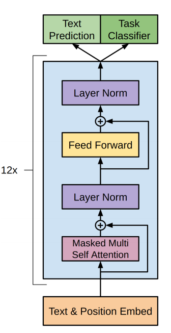

‘ChatGPT’ 개발 및 적용
거대 언어 모델 GPT-3를 미세조정(fine-tuning)한 특정 전문 분야의 챗봇으로 사용자가 질문을 하면 상세하고 정확한 응답을 전달합니다.
ChatGPT란?
-
ChatGPT는 OpenAI가 2022년 11월에 발표한 GPT 구조를 사용한 대화형 인공지능 모델로 2022년 발표된 GPT-3.5를 기반으로 만들어졌습니다.
-
사용자가 제공하는 문장(프롬프트)을 기반으로 텍스트를 생성하여 사용자를 돕는 것이 ChatGPT의 주 기능입니다.
-
GPT는 트랜스포머 모델의 디코더 부분을 가져와 사용하였습니다. 트랜스포머는 셀프 어텐션 기술을 사용하여 문장 내의 단어들 사이의 관계를 이해하고, 이를 기반으로 문장의 맥락과 의미를 학습하는 모델입니다.
-
ChatGPT는 회화형 데이터셋을 사용하여 파인튜닝 되어 대화적 성격의 문맥에 맞춰 자연스러운 텍스트를 생성하기 위해 매개변수가 최적화 되어 있어 챗봇을 만드는 데 적합합니다.
RNN(순환 신경망)과 LSTM
-
RNN(Recurrent Neural Network)은 입력과 출력을 시퀀스 단위로 처리하는 시퀀스 모델로, 매 스텝의 아웃풋이 다음 스텝의 인풋으로 입력되어 이전 스텝의 정보에 접근이 가능합니다.
-
바닐라 RNN은 짧은 시퀀스에서만 효과를 보이고, 스텝이 길어지면 이전의 정보가 뒤로 충분히 전달되지 못하는 Vanishing Gradient라는 단점이 있습니다.
-
LSTM(Long Short-Term Memory)은 불필요한 기억을 지우고 기억해야 할 것들은 정하는 방식으로 Vanishing Gradient의 단점을 보완한 RNN 모델입니다.
Seq2seq (Sequence-to-Sequence)
-
Seq2seq 모델은 인코더-디코더로 구성된 모델로 문장(단어들의 시퀀스)를 입력으로 받아 출력으로 다른 문장을 생성할 수 있습니다.
-
인코더는 입력 문장의 모든 단어들을 순차적으로 입력 받은 뒤 마지막에 모든 단어 정보를 압축하여 마지막 시점에 컨텍스트 벡터라는 하나의 벡터로 만듭니다. 이 컨텍스트 벡터는 디코더로 전송되며, 디코더는 컨텍스트 벡터를 이용하여 새로운 단어를 하나씩 출력합니다.
-
Seq2seq에서 인코더와 디코더는 RNN 모델인 LSTM으로 구성되어 있습니다.
-
디코더는 다음에 올 단어를 예측하고, 그 예측한 단어를 다음 시점의 RNN 셀의 입력으로 넣는 행위를 반복합니다.
-
Seq2seq는 입력 시퀀스가 주어졌을 때 올바른 출력 시퀀스를 출력할 확률성을 높이는 방식으로 훈련됩니다.
Attention
-
어텐션은 시퀀스 요소들 가운데 태스크 수행에 중요한 요소에 집중하는 것입니다.
-
트랜스포머에 사용되는 어텐션은 셀프 어텐션 기법으로, 입력 시퀀스 가운데 태스크 수행에 의미 있는 요소 위주로 정보를 추출할 수 있습니다.
-
기존 seq2seq 모델은 인코더가 입력 시퀀스를 하나의 벡터로 압축하는 과정에서 입력 시퀀스의 정보가 일부 손실되는 문제점이 있었는데, RNN 대신 셀프 어텐션 기법을 사용하여 디코더가 맨 마지막의 컨텍스트 벡터에만 접근하는 대신 모든 입력 단어에 접근할 수 있게 되었습니다.
Transformer
-
트랜스포머는 2017년 구글에서 발표한 셀프 어텐션을 사용하는 sequence-to-sequence 모델입니다.
-
트랜스포머는 셀프 어텐션 기술을 사용하여 문장 내의 단어들 사이의 관계를 이해하고, 이를 기반으로 문장의 맥락과 의미를 학습할 수 있는 모델입니다.
-
트랜스포머의 인코더는 소스 시퀀스 간의 관계 정보를 담은 히든 벡터를 출력합니다.
-
트랜스포머의 디코더는 인코더가 보내준 히든 벡터를 받아 매번 인풋 시퀀스의 각기 다른 부분에 집중하며 단어를 출력합니다.
-
트랜스포머는 기계번역과 시계열 예측에 뛰어난 성능을 보이며, GPT와 BERT, chatGPT 같은 다양한 자연어처리 모델들에 사용됩니다.
GPT란?

-
GPT는 Generative Pre-trained Transformer의 약자로 대규모의 데이터로 훈련하여 자연어의 표현을 학습한 인공지능 모델입니다.
-
GPT는 파인튜닝을 통하여 번역, 텍스트 요약, 텍스트 생성과 같은 다양한 자연어 처리 태스크를 수행할 수 있습니다.
-
GPT는 트랜스포머의 디코더 부분을 사용하여 이전에 생성된 단어의 문맥에 기반하여 새로운 단어를 매번 생성해냅니다.
-
GPT는 다음에 올 단어를 예측하는 비지도 학습 방식으로 훈련되었습니다.
GPT-3
-
GPT-3는 GPT의 3세대 모델로 2020년 OpenAI에서 발표한 언어 모델입니다.
-
GPT-3는 이전 세대의 모델들과 기본적인 구조는 같지만 더 많은 1750억개의 파라미터와 96개의 디코더 레이어를 갖고 있으며, 더 많은 데이터를 사용하여 훈련되었습니다.
-
GPT-3은 이전 세대의 GPT 보다 더 좋은 성능을 보이며, 예시 몇 가지 만으로도 새로운 태크스를 수행하는 퓨 샷 러닝이 가능합니다.
Fine-Tuning GPT
GPT 모델을 fine-tuning(미세조정)하는 방법은 대표적으로 아래와 같다.
- Fine-Tuning
- Few-Shot Learning
- One-Shot Learning
- Zero-Shot Learning
- LoRA (Low-Rank Adaptation of Large Language Models)
Fine-Tuning (FT)
가장 일반적인 접근법으로, 사전학습된 모델을 원하는 태스크에 맞도록 지도학습 데이터셋으로 학습시키는 과정을 포함합니다. 보통 수천~수만 개의 라벨링된 예시를 필요로 한다.
장점
단점
-
모든 태스크마다 큰 데이터셋을 새로이 필요로 합니다.
-
분포 외의 데이터에 대해서는 일반화를 잘 하지 못합니다.
-
학습 데이터에 거짓/비논리적인 특성이 있는 경우 이를 흡수할 수도, 사람에 비해 불공정한 비교로 이어질 수도 있습니다.
Few-Shot Learning
데이터셋에서 예시는 문맥과 원하는 답이 있고, few-shot은 단 K개의 문맥과 답이 주어진다. 이후 마지막으로 단 한 개의 문맥이 주어지면, 모델은 정확한 답을 생성해 내야 한다. 모델의 context window에 넣을 수 있는 만큼 많은 예시(K)를 넣는다. 일반적으로 가능한 context 길이 2048에 들어가는 10~100개의 예시를 넣는다.
장점
-
task-specific한 데이터에 대한 필요를 크게 줄여줍니다. 극단적으로는 몇 개 뿐이어도 충분합니다.
-
지나치게 크고 좁은 분포를 갖는 미세조정용 데이터셋을 학습할 가능성을 줄일 수 있습니다.
단점
-
미세조정과 비교하여 성능을 떨어집니다.
-
적은 수라 해도 여전히 task-specific한 데이터를 필요로 합니다.
One-Shot Learning
few-shot과 비슷하나 단 한 개의 예시와, task에 대한 자연어 지시문(instruction)이 제공된다는 점이 다릅니다.
Zero-Shot Learning
예시는 넣지 않고, 수행할 태스크에 대한 설명(description) 혹은 지시문(instruction)만을 넣습니다.
장점
-
task-specific한 데이터에 대한 필요를 크게 줄여줍니다. 극단적으로는 몇 개 뿐이어도 충분합니다.
-
지나치게 크고 좁은 분포를 갖는 미세조정용 데이터셋을 학습할 가능성을 줄일 수 있습니다.
단점
-
미세조정과 비교하여 성능을 떨어집니다.
-
적은 수라 해도 여전히 task-specific한 데이터를 필요로 합니다.